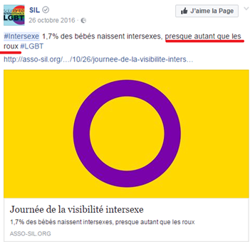
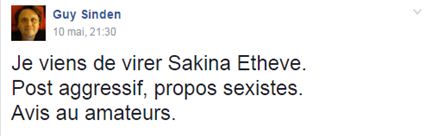

Médias
Comment les médias traitent-ils le sujet des intersexes? Y a-t-il une logique chronologique? Face à ce sujet, comment réagissent les différents acteurs présents sur les multiples scènes médiatiques, commme la presse, les réseaux sociaux ou les blogs?
Recherche et analyse
Commençons par une information générale qui caractérise l’intérêt que portent les internautes français à ce sujet. Le service Google Trends nous permet de voir l’occurrence de la recherche du mot intersexe en France sur Google, le moteur de recherché le plus utilisé en France et partout dans le monde.
Précision technique: Les résultats reflètent la proportion de recherches portant sur le mot « intersexe » en France, par rapport à une région Française où le taux d'utilisation de ce mot est le plus élevé (valeur de 100). Ainsi, une valeur de 50 signifie que le mot a été utilisé moitié moins souvent, et une valeur de 0 correspond à une utilisation enregistrée de moins de 1 % par rapport à celle qui a obtenu 100.
Analyse du graphe
On observe 3 régions particulières :
- La période antérieure à mars 2017 : intérêt faible et parfois presque inexistant.
- Premier pic (en vert) : 25 mars 2017 : intérêt moyen et non homogène.
- 2ème pic (en rouge) : 6 mai 2017 : sujet qui intéresse de la même façon tous les internautes français.
Ce graphe illustre ce qu’on appelle un effet de mode. En effet, en Mars 2017, la Cour d’appel de Tours a rompu une décision prise par tribunal de grande instance de Tours qui admet que Gaëtan Schmitt (pseudonyme) n’éait ni femme ni homme. Deux mois plus tard, la Cour de cassation décide qu Gaëtan ne pouvait pas être reconnu à l’Etat civil comme étant de sexe neutre. Cette affaire a été médiatisée. Plusieurs journaux comme Libération ont publiés des articles qui évoquent ce sujet.
Reseaux sociaux
Sur les réseaux sociaux : Facebook, Instagram et Twitter, les hashtags #intersexe se multiplient le 8 novembre qui coïncide avec la journée de la solidarité intersexe. Certains publient des revues scientifiques, d’autres des vidéos de sensibilisation afin de convaincre les autres internautes que l’intersexualité n’est pas une anomalie mais plutôt un gendre indépendant.
Ici, on observe que ce sujet est cité avec d’autres causes comme celui des LGBT. Cette page tente avec sa publication d’affirmer que l’intersexe est un genre à part.
Sur Facebook, on observe une absence de pages de soutien de la cause comme celles présentes pour les LGBT, etc. La plus grande page regroupe 3000 personnes environ et c’est une page internationale. Par contre, on remarque la Présence de plusieurs groupes de 100 membres en ordre de grandeur, ce sont des groupes de soutien et d’échange d’expériences. Ici, on observe que ce sujet est cité avec d’autres causes comme celui des LGBT. Cette page tente avec sa publication d’affirmer que l’intersexe est un genre à part. On conclut que les personnes intersexuées ont tendance à se regrouper pour former une communauté.
Vocabulaire et Violence
On commence par faire une remarque, c’est que même dans les groupes de soutien cités ci-dessus, il y a des membres qui se sont ‘infiltrées’ pour exprimer leurs avis, parfois violemment.
L’administrateur du groupe exclue un membre après un commentaire jugé agressif.
Il est fréquent de voir les internautes se moquer gratuitement des intersexes par le biais de memes, une forme d'humour souvent noire endémique d'internet.
Violence gratuite ou contre-Violence ?
Revenons à notre problématique : à la naissance, beaucoup d’enfants intersexués se font opérer pour leur attribuer une identité sexuelle. Les militants soutenant la cause des intersexués considèrent que ces opérations sont forcées et laissent des mutilations sexuelles. D’autres vont très loin et qualifient ces interventions chirurgicales de torture.
Dans un article publié par l’Obs le 04 mai 2017, Kris, 59 ans, intersexué estime qu’il était opéré de force et dit qu’il souffre des mutilations génitales. À sa naissance, Les médecins ont "choisi" son sexe, en coupant ses testicules et lui fabriquant un vagin artificiel, alors qu’il a choisi son orientation sexuelle plus tard, c’est pourquoi il considère qu’il aurait dû être un garçon.
Ainsi, Kris considère qu’il faut un préalable indispensable : ne plus opérer ces bébés à la naissance. Lorsque ces bébés intersexués sont nés, les médecins font des investigations hormonales et génétiques, pour savoir à quel genre devrait ressembler le plus. Et ils lui opèrent le sexe, pour le "réparer".
"Ce n’est pas vital !" martèle Kris. "Les mutilations sexuelles sont considérées comme atroces pour les fillettes excisées. Pourquoi est-ce prescrit pour les intersexués ? Cela ne devrait pas être ainsi imposé dès la petite enfance."
Cette condamnation continue dans d’autres déclarations. Le blogueur Virgile DALL'ARMELLINA publie un article sur Mediapart intitulé Mutilations sexuelles: la barbarie selective. Ici, ce blogueur, comme d’autres journalistes, condamne fermement l’intervention chirurgicale à la naissance des enfants intersexués et exprime ce refus d’une façon claire en faisant de ces enfants des victimes d’une violence ciblée. Cette façon de répondre à un acte chirurgical considéré comme une violence sélective par un champ lexical violent sert d’une arme qui peut défendre ces enfants intersexués considérés comme des victimes vulnérables.
Chaine de violence
Notre analyse nous a mené à dégager une chaine de violence. Une intervention médicale à l’enfance provoque une sensation de vulnération et d’être victime d’une torture inévitable. Cette sensation entraine une réaction qui condamne cette violence et qui se permet d’utiliser des termes précis comme une défense lexicale légitime.
Et de façon similaire à toutes les autres causes : LGBT, féminisme, Végétarisme et toutes les causes liées aux droits d’homme, les personnes intersexuées se rassemblent sur des groupes et des forums pour construire une force collective capable de défendre leurs causes et de faire face à la violence des commentaires.
Le cas particulier d'Hanne Gaby Odiele

Hanne Gaby Odiele, 29 ans et mannequin ayant posé pour Chanel, Dior et d’autres marques, dit qu’elle a subi plusieurs opérations à l’âge de 10 ans pour retirer des testicules. « A l'âge de 18 ans, elle décide alors d'entreprendre une reconstruction vaginale. Les deux interventions furent très traumatisantes et l'affectent encore aujourd'hui ».
Hanne s’est engagée pour les personnes intersexuées, elle a donc rejoint interACT Advocates for Intersex Youth qui milite en faveur des enfants nés intersexes. Elle s'est exprimée dans une vidéo postée sur son compte Instagram, intitulée: "Vous pouvez être qui vous voulez, ce que vous voulez, soyez juste vous!", cette vidéo a fait 700 000 vues et plus que 8000 ‘j’aime’.
Le soutien d’une célébrité a une valeur inestimable pour une cause. De plus, Hanne travaille dans un domaine qui est supposé incarner la beauté, la finesse, l’élégance et la courtoisie. Ce soutien est un message chiffré qui répond à l’intervention médicale jugée violente avec douceur et élégance.
Conclusion
Le sujet de notre controverse provoque des polémiques sur tous les plans: juridique, médical et même scientifique. En effet, la simple quantification de la proportion des personnes intersexuées posent des soucis. Nous avons essayé d’analyser le comportement des différents acteurs médiatiques dans le traitement de notre sujet. On en a dégagé une chaine de violence qui marque les interactions entre les militants, les médias et le grand public.